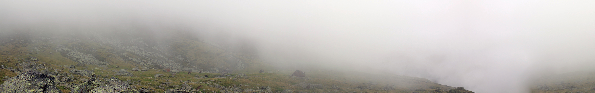

class LiudmilaMashkina : public Human {
public:
static std::unique_ptr<LiudmilaMashkina> & get();
bool looksForJob() const { return true; }
bool acceptsOffer(const Offer & offer) const;
private:
LiudmilaMashkina(const SoftwareEngineer::Config & ecfg,
const FashionDesigner::Config & dcfg);
SoftwareEngineer _engineer;
FashionDesigner _designer;
static std::unique_ptr<LiudmilaMashkina> _instance;
};